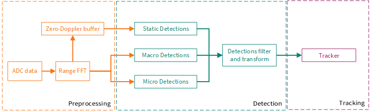
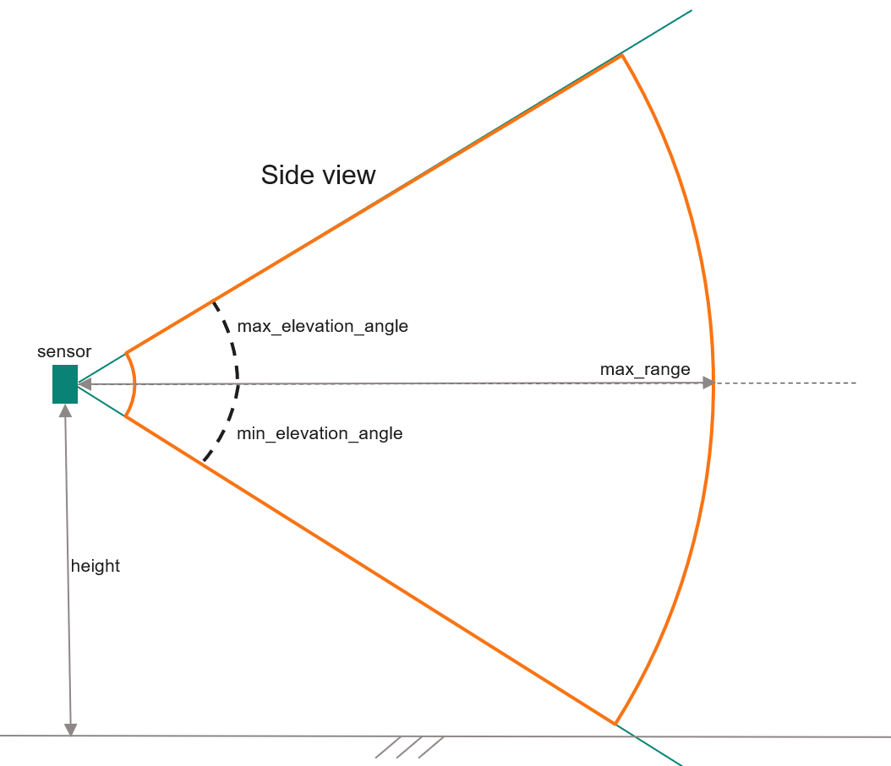

Algorithm
Introduction
The Presence Detection and Tracking (PDT) algorithm converts raw data from the XENSIV™ 60 GHz CMOS radar sensor into real-time insights on indoor human activity. Because it operates on a frequency spectrum independent of visible light, the system ensures consistent performance in total darkness or low-visibility conditions without requiring optical clarity.
Key Capabilities
Privacy-Centric: Enables smart home automation, security, and occupancy monitoring without the privacy concerns of camera-based systems.
High Sensitivity: Detects a full spectrum of activity, from micro-movements like breathing to active full-body motion.
How It Works
The algorithm processes each radar frame through a three-stage pipeline: preprocessing, detection, and tracking.
Preprocessing Stage
Raw ADC data from the radar sensor undergoes range Fast Fourier Transform (FFT) to convert time-domain signals into frequency-domain spectra. A Zero-Doppler buffer accumulates static components across multiple chirps within each frame, creating a complex spectrum that highlights stationary elements.
Detection Stage
Three parallel detection chains analyze the processed data simultaneously:
Macro Detection: Identifies large-scale movements and displacements, such as walking or running
Micro Detection: Detects smaller motions without significant displacement, like hand gestures or posture changes
Static Detection: Captures very subtle movements, including breathing or minor vibrations
All detections are then filtered by range and angle masks and transformed into a unified cylindrical coordinate system that accounts for the sensor’s mounting position and orientation.
Tracking Stage
Individual detections are associated across frames to create stable tracks with persistent IDs. A state machine manages the tracking process, ensuring reliable identification of people over time.
{kind=link}

Algorithm Processing Pipeline
What It Detects
Detection Types
Each detection includes spatial and motion information:
Range: Ground-projected distance from the sensor in meters
Azimuth: Horizontal angle in degrees (negative left, positive right)
Elevation: Height above ground in meters
Doppler: Radial velocity in m/s
Magnitude: Signal strength in dB
Type: Which detection chain (macro, micro, or static)
Tracking Information
Tracked targets provide temporal consistency with additional properties:
ID: Unique identifier that persists across frames
Speed: Computed movement speed in m/s
Activity: Motion intensity metric (0-10, where 10 is maximum for a moving person, < 1 is mostly static)
Configuration
The algorithm adapts to different installation scenarios through mounting configuration:
Sensor Orientation: Tilt angle and mounting height above ground
Field of View: Range and angle limits to define the detection zone
{kind=link}

Sensor Placement and Elevation Angles
The elevation angles shown indicate the sensor tilt range: positive values tilt the sensor upwards, while negative values tilt it downwards (tested from 0° to -60° for downward tilt).
These settings create a detection area defined by range and angle limits in front of the sensor, filtering out irrelevant detections.
Programming Interfaces
The algorithm provides two levels of programming interfaces:
C-Wrapper API
The C-Wrapper API offers a low-level C interface for direct frame processing. It provides functions for:
Getting default configuration
Initializing the processing pipeline
Processing individual radar frames
Retrieving raw detection and tracking results
This API is ideal for embedded systems or applications requiring fine-grained control over the algorithm.
Use-Case API
Built on top of the wrapper, the Use-Case API provides a stable, high-level interface with:
Human-readable configuration options
Event-driven processing with JSONL serialization
Presence detection and tracking events
Simplified integration for application development
The Use-Case API abstracts complexity while providing robust, production-ready functionality for real-world applications.